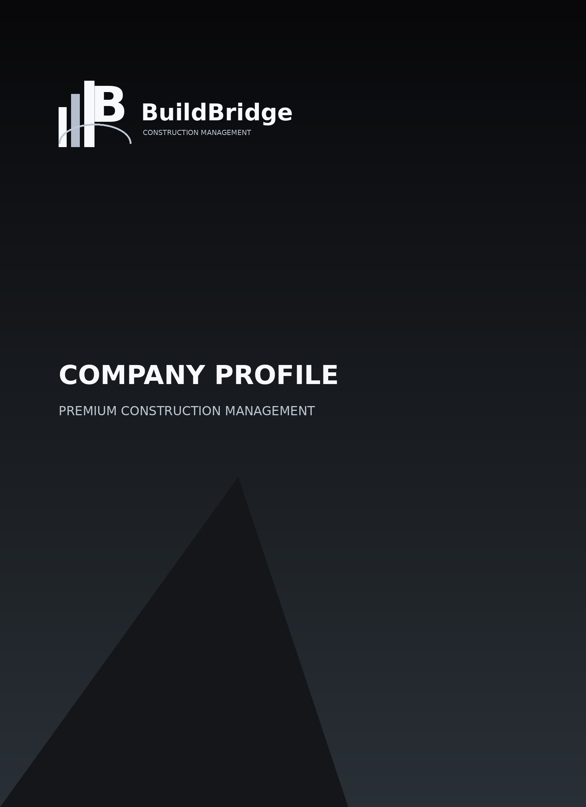

We're the trusted link between ambitious construction projects and successful completions. Founded on transparency, built on trust.
Our Story
BuildBridge was founded with a simple mission: to make construction projects smoother, more transparent, and more successful for everyone involved. We saw a gap in the market — clients struggling to find reliable contractors, and skilled contractors seeking quality projects.
Since 2014, we've grown from a small consultancy to a full-service construction management company, overseeing projects worth over R50 million. Our approach combines industry expertise with modern project management techniques, ensuring every build meets our high standards.
We don't just manage projects — we build relationships. Our success is measured not just in completed buildings, but in satisfied clients and thriving contractor partnerships.

Our Values
No hidden costs, no surprises. We believe in complete honesty throughout every project phase.
We settle for nothing less than exceptional quality in every aspect of our work.
We view our clients and contractors as partners working toward shared success.
We do what's right, even when it's difficult. Trust is our most valuable asset.
We continuously seek better ways to deliver value and improve our processes.
We promote responsible building practices that respect our environment.
Our Team
Work With Us
Let's discuss how BuildBridge can help bring your construction vision to life.